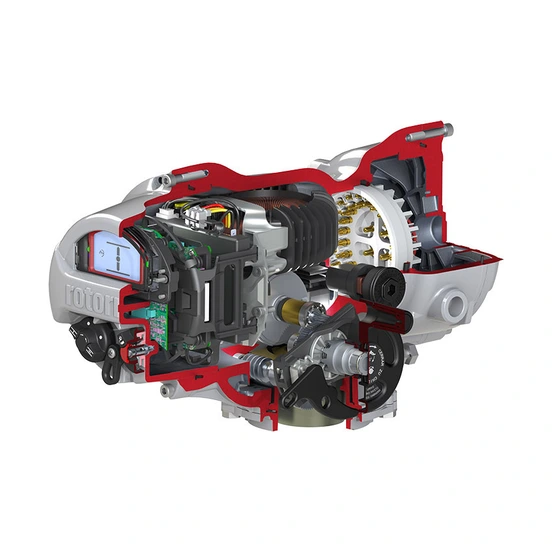

IQT3 Pro là phiên bản part-turn (quarter-turn) của nền tảng actuator điện thông minh IQ3 Pro, dùng cho van bi, van bướm và các van chuyển động xoay góc 90 độ. Ngoài bản tiêu chuẩn, Rotork còn có IQT3M Pro cho ứng dụng modulating tần suất cao và IQT3F Pro dùng full worm wheel cho van chuyển động chậm, torque lớn. Bài viết trình bày dải torque, sự khác nhau giữa các biến thể và các dữ liệu cần chuẩn bị trước khi chọn cấu hình hoặc báo giá tại Việt Nam.

Trả lời nhanh
- IQT3 Pro tiêu chuẩn: torque trực tiếp 125–3.000 Nm, nguồn 3-pha/1-pha/DC, duty S2/S3 (Class A/B) tới 60 starts/hr.
- IQT3M Pro (modulating): cùng dải torque 125–3.000 Nm, chịu tới 1.800 starts/hr (Class C) nhờ starter điện tử phản hồi nhanh.
- IQT3F Pro (full worm wheel): torque 50–3.000 Nm cho output rising (A)/non-rising (B), hoặc thrust tuyến tính 18,8–75,8 kN (L) — dùng cho van chậm, torque cao như choke/multi-port valve.
- Có tùy chọn IQT3 Shutdown Battery (fail-to-position khi mất điện) và Remote Hand Station (vận hành từ xa tới 100 m).
- Khi torque van vượt dải trực tiếp, cần xem xét thêm gearbox part-turn (ví dụ IW Mk2) — việc chọn ratio/size phải tính theo torque thực tế, không suy đoán cặp actuator-gearbox chung.
IQT3 Pro là gì
IQT3 Pro thuộc họ IQ3 Pro, dùng chung nền tảng điều khiển, cấu hình non-intrusive qua Rotork App/BTST/núm điều khiển local, đo torque và vị trí độc lập, và data logger như dòng multi-turn IQ3 Pro. Khác biệt là output xoay góc (part-turn) phù hợp van bi, van bướm, van plug thay vì van multi-turn (van cổng, van cầu).
Bảng so sánh biến thể IQT3 Pro
| Biến thể | Đặc điểm chính | Torque trực tiếp | Duty cycle |
|---|---|---|---|
| IQT3 Pro | 3-pha/1-pha/DC, đóng/mở hoặc điều tiết không liên tục | 125–3.000 Nm | Tới 60 starts/hr (S2/S3, Class A/B) |
| IQT3M Pro | Modulating, starter điện tử, remote control phản hồi nhanh | 125–3.000 Nm | Tới 1.800 starts/hr (S4, Class C) |
| IQT3F Pro (A/B) | Full worm wheel, output multi-turn rising (A) hoặc non-rising (B); dùng cho van chậm, torque cao | 50–3.000 Nm | Tới 1.800 starts/hr (S4, Class C) |
| IQT3F Pro (L) | Full worm wheel, output tuyến tính; dùng cho choke/multi-port valve | Thrust 18,8–75,8 kN | Tới 1.800 starts/hr (S4, Class C) |
Tiêu chí chọn cấu hình IQT3 Pro
- Loại van: van bi/van bướm tiêu chuẩn dùng IQT3 Pro hoặc IQT3M Pro; van choke/multi-port hoặc cần chuyển động chậm torque cao xem xét IQT3F Pro.
- Torque seating/unseating: đối chiếu torque đóng/mở thực tế của van (có biên an toàn theo khuyến nghị nhà sản xuất van) với dải trực tiếp từng biến thể ở bảng trên.
- Duty cycle: đóng/mở theo lịch chọn IQT3 Pro; điều tiết liên tục tần suất cao chọn IQT3M Pro hoặc IQT3F Pro modulating.
- Cần thêm gearbox hay không: nếu torque van vượt dải trực tiếp của actuator, cần bổ sung gearbox part-turn (như IW Mk2) — kích thước/tỷ số gearbox phải tính riêng theo torque và tốc độ yêu cầu, không dùng chung một cặp actuator-gearbox cho các van khác nhau.
- Dự phòng khi mất điện: nếu van yêu cầu về vị trí an toàn khi mất nguồn, xem xét tùy chọn IQT3 Shutdown Battery (lưu ý: không áp dụng cho IQT3000).
- Vận hành từ xa/vị trí khó tiếp cận: tùy chọn Remote Hand Station cho phép vận hành, tra cứu và cấu hình từ xa tới 100 m.
Gearbox part-turn khi cần tăng torque
Khi van yêu cầu torque vượt dải trực tiếp của IQT3 Pro, một lựa chọn phổ biến trong danh mục Rotork là gearbox quarter-turn dòng IW Mk2, dùng cho van bi, van plug và van bướm. Gearbox có gearing tự khóa (self-locking) nhờ góc nghiêng răng thấp, kín theo tiêu chuẩn IP67 (ngâm nước 1 m trong 30 phút), dải nhiệt độ tiêu chuẩn -40°C đến +120°C, mặt bích theo ISO 5211 (có tùy chọn MSS SP-101). Tùy chọn nâng cấp gồm IP68 (15 m/72 giờ), chứng nhận ATEX, dải nhiệt độ thấp/cao mở rộng và bulong inox.
Việc chọn size và tỷ số truyền (ratio) của gearbox IW phải dựa trên torque đầu ra yêu cầu thực tế của van và torque đầu vào từ actuator — đây là bước sizing kỹ thuật cần thực hiện riêng cho từng dự án, không áp dụng một cặp actuator-gearbox cố định cho các van khác biệt về kích thước hoặc áp suất vận hành.
Model và range liên quan
| Model/range | Lý do liên quan | Trang sản phẩm |
|---|---|---|
| IQT3 Pro | Actuator part-turn chính trong bài này | IQT3 Pro cho van part-turn |
| IQ3 Pro | Nền tảng multi-turn cùng dòng điều khiển | IQ3 Pro Rotork |
| IQ3 Perform | Lựa chọn tiết kiệm chi phí hơn cùng nền tảng nếu không cần đầy đủ tính năng Pro | IQ3 Perform |
| IW (part-turn gearbox) | Gearbox bổ sung khi torque van vượt dải trực tiếp của IQT3 Pro | Gearbox part-turn IW |
Mua IQT3 Pro chính hãng tại Việt Nam
Fast Group Engineering là đơn vị cung cấp sản phẩm Rotork chính hãng tại Việt Nam, đầy đủ giấy tờ CO/CQ, catalogue và datasheet theo từng lô hàng. Đội ngũ kỹ thuật hỗ trợ đối chiếu biến thể IQT3 Pro phù hợp theo torque, duty cycle và yêu cầu gearbox trước khi báo giá, đảm bảo hồ sơ nhập khẩu và nghiệm thu đầy đủ.
Câu hỏi thường gặp
IQT3 Pro dùng cho loại van nào?
IQT3 Pro là actuator part-turn (quarter-turn), phù hợp van bi, van bướm và các van chuyển động xoay góc 90 độ. Với van cần chuyển động chậm, torque cao như choke valve hoặc multi-port valve, Rotork có thêm biến thể IQT3F Pro dùng full worm wheel.
IQT3 Pro và IQT3M Pro khác nhau ở đâu?
IQT3 Pro tiêu chuẩn phù hợp đóng/mở tới 60 starts/hr (Class A/B). IQT3M Pro là bản modulating, chịu tần suất đóng cắt cao hơn tới 1.800 starts/hr (Class C) nhờ starter điện tử phản hồi nhanh, dùng cho ứng dụng điều tiết liên tục. Dải torque trực tiếp của cả hai đều 125–3.000 Nm.
Khi nào cần thêm gearbox IW cho IQT3 Pro?
Cần xem xét gearbox part-turn như IW Mk2 khi torque van vượt dải trực tiếp của IQT3 Pro hoặc khi van cần tỷ số truyền lớn hơn. Việc chọn ratio và size gearbox cụ thể phải tính theo torque yêu cầu thực tế của van, không suy đoán cặp actuator-gearbox chung cho mọi trường hợp.
IQT3 Pro có tùy chọn dự phòng khi mất điện không?
Có tùy chọn IQT3 Shutdown Battery, cung cấp chức năng fail-to-position cho IQT, IQTM và IQTF khi mất điện lưới, có bản cho khu vực Ex và non-Ex. Theo tài liệu flyer hiện hành, tùy chọn này không áp dụng cho IQT3000.
Cần gửi thông tin gì để báo giá IQT3 Pro đúng cấu hình?
Gửi torque seating/unseating yêu cầu của van, số starts/hr, loại van (van bi/van bướm/van choke), điện áp nguồn, có cần chứng nhận Ex hay không, và ảnh nameplate nếu đang thay thế actuator cũ, cho Fast Group Engineering để đối chiếu đúng biến thể trước khi báo giá.
Gửi dữ liệu van để chọn đúng biến thể IQT3 Pro
Để kiểm tra đúng mã, vui lòng gửi ảnh nameplate (nếu thay thế actuator cũ), torque seating/unseating yêu cầu, điện áp/tín hiệu điều khiển, loại van và điều kiện vận hành cho Fast Group Engineering qua Zalo/điện thoại (+84) 938 888 958 hoặc email minhduc@fastgroup.vn.
Nguồn tham khảo
- PUB002-407-00, IQ3 Pro Range Flyer, Issue 05/26 — trang 1 (tính năng nền tảng IQ3 Pro), trang 2 (dải torque IQT3 Pro/IQT3M Pro/IQT3F Pro, IQT3 Shutdown Battery, Remote Hand Station).
- PUB028-081-00, IW Mk2 Range Flyer, Issue 05/26 — trang 1 (đặc tính gearbox IW Mk2, IP67/IP68, ISO 5211, tùy chọn ATEX và dải nhiệt độ).
Ghi chú nội bộ: bảng sizing chi tiết của IW Mk2 (ratio, max input torque theo từng size) nằm ở trang 2 của PUB028-081, đơn vị gốc là lbf.ft (imperial) — bài này chưa đưa vào để tránh sai số quy đổi; reviewer cần tính sizing riêng cho từng dự án thay vì dùng số liệu tổng hợp trong bài. Bài cũng chưa đối chiếu PUB002-197 (IQ3 Pro Range chi tiết) và PUB028-079/080 (IW Range chi tiết dạng metric/imperial) vì chưa có trong thư viện PDF_REFERENCE.